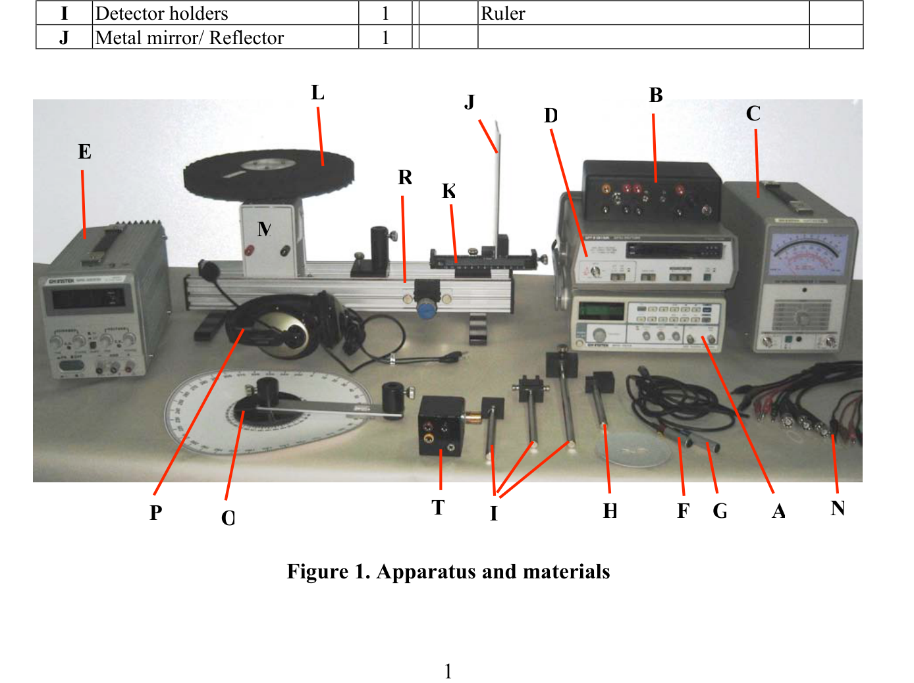
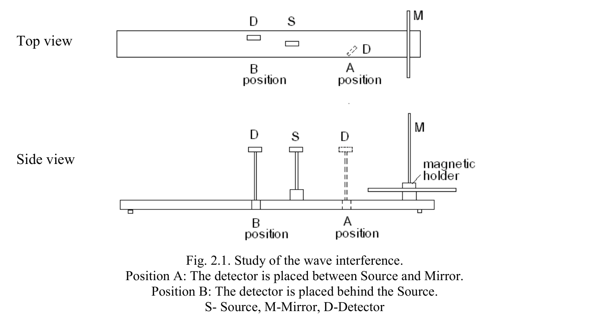
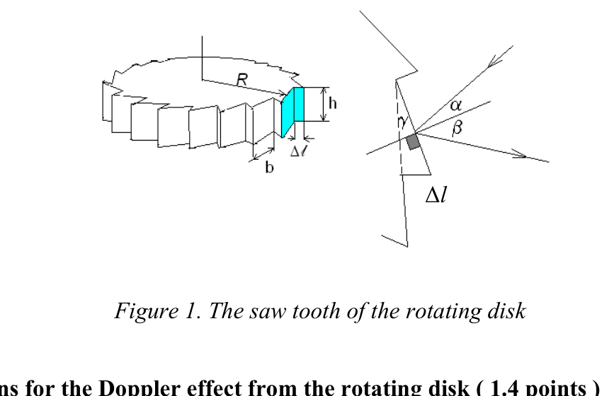

The Physics of Sound Wave (20 points)
Our environment is filled with sound and sound effects. This experimental problem is related to the ultrasonic and sonic effects and consists of four parts. In Part 1 the characteristics of the ultrasonic microphone system should be acquired. Afterwards we will observe and explain interference phenomena, then will study the Doppler Effect, and finally will determine the threshold of human hearing and resolving power.
List of Apparatus and materials
| label | Component | Q’ty | label | Component | Q’ty |
|---|---|---|---|---|---|
| A | Function Generator | 1 | K | Mirror magnetic holder with ruler | 1 |
| B | Ultrasonic Amplifier | 1 | L | Rotating disc | |
| C | AC Millivoltmeter | 1 | M | A motor attached to the optical bench | 1 |
| D | Frequency counter | 1 | N | Connection coaxial cables | 4 |
| E | variable DC Power Supply | 1 | O | Rotating holder with angle meter | 1 |
| F | Ultrasonic transducer for Source (Red labeled) | 1 | P | Stereo Headphones | 1 |
| G | Ultrasonic microphone for Detector (Blue labeled) | 1 | R | Optical bench | 1 |
| H | Source holder | 1 | T | Variable resistor (rheostat) | 1 |
| I | Detector holders | 1 | Ruler | ||
| J | Metal mirror / Reflector | 1 |

Figure 1. Apparatus and materialsInstrument notes
Synthesized Function Generator (Item A). The power button may be pressed for “ON” and pressed again for “OFF”. Select the frequency range and use the proper button: to move the cursor in the main display (frequency editing point) use key “4” or “5” after pressing the SHIFT key; to specify the frequency unit use key “9” for kHz with the SHIFT key. The frequency will be displayed in the main display. To see the voltage of the signal produced by the generator, use the V/F button with the SHIFT key. Use the frequency adjustment knob to tune the proper frequency. To change the amplitude of the signal, use the amplitude control knob. You must switch on the “Output control ON/OFF key”, otherwise the generator will not send the signal to the microphone. Do not use the “Duty control” in the sine wave situation.
Amplifier Adaptor (item B). The amplifier itself does not do anything; it serves merely as an adaptor for connecting plugs which otherwise would not match.
AC Millivoltmeter (Item C). Connect a BNC type cable from the Amplifier Adaptor to the INPUT terminal. Set the RANGE to and switch on the power. Alter the RANGE selector switch until the pointer is at a position located at of the full scale, so the reading can be taken easily. The number written on the selector switch indicates the maximum measurable value in that range.
Frequency counter (Item D). Connect the Signal cable to the “Signal input” connector. Turn ON the frequency counter. Press the “Freq. button” and the “Time button”; the frequency counter will be ready for measurement.
Caution: Be sure to switch off the power of the equipment before plugging in/out all connections, otherwise damage to the equipment or sensors will occur.
PART 1. Characteristics of the microphone system (3 points)
Introduction. The property called piezoelectricity provides a convenient coupling between mechanical oscillations of a crystal, which occur at a very sharply defined frequency, and the electrical properties of a circuit of which the crystal is a part. Piezoelectric materials are used to convert electric and sound signals into each other. But they are distinguished by having a well specified working frequency range. Therefore, in this experimental part, we have to determine the physical properties of the microphone, which is made of piezoelectric material, before using it.
List of components: Function Generator (FG); Ultrasonic Amplifier; AC Millivoltmeter (MV); Rotating holder with angle meter; Ultrasonic transducer for Source (S) with holder; Ultrasonic microphone for Detector (D) with holder; Two connection coaxial cables; Calculator.
Experiments and procedures. We will use two ultrasonic microphones, one of them used as a signal source (red labeled) and the other as a signal receiver (blue labeled). The source receives the signal from the function generator (FG) through the amplifier and converts the signal into a sound wave. The signal receiver (the detector), connected to a preamplifier, receives the sound wave emitted from the source and converts it to an electrical signal. The voltage of the output signal is measured by the AC Millivoltmeter.
Hints: The voltage of the signal given to the source (S) should be adjusted around . If it is more than this, the ultrasonic wave will be saturated and it will affect your result. The microphones are placed in the rotating holder and connected to an electrical circuit with the ultrasonic amplifier scheme. The distance between the source and the detector should not be changed during the experiment. Please make sure that the microphones are placed parallel to the holder base and that the axes of the microphones lie on the same line.
1a. (1.5 points) By changing the frequency of the signal from the FG, measure the voltage of the output signal converted by the detector. Measure in the range of input frequency from to , and make sure the frequency of the signal sent to the source stays in this given range. Otherwise, the microphone will be damaged or out of order. Set the voltage of the signal from the FG around . Enter the measured data into Table 1A. Plot the graph using the measured data. Plot the measured rms signal voltage vs. frequency, and determine the cut-off frequencies , where the measured rms signal voltage drops to of the maximum measured value. Hence determine the bandwidth . Determine the working frequency (at which the voltage of the signal from the detector is at maximum) from the obtained results.
1b. (1.5 points) Set the frequency from the FG to the working frequency. Determine the angular dependence of the intensity of the output signal on the position of the detector relative to the source. Write the measured data in Table 1B. Plot a graph of the dependence of the voltage ratio on the angle , where and are the voltages of the output signal at angle and , respectively. The direction has maximal detection and is called the axis of the source. Find the angular values at which the voltage of the detected signal decreases 2 and 3 times.
PART 2. Interference of Waves (6 points)
Introduction. A standing wave pattern is a vibrational pattern created within a medium when the reflected waves from a mirror interfere with the incident waves from the source. The waves interfere in such a manner that there are points of no displacement produced at the same positions along the medium. These points along the medium are known as nodes. There are other points along the medium which undergo vibrations between a large positive and a large negative displacement. These points are known as antinodes.
List of components: Function Generator (A); Ultrasonic Amplifier (B); AC Millivoltmeter (C); Ultrasonic transducer for Source (F) with holder (H); Ultrasonic microphone for Detector (G) with holder (I); Metal mirror (J) and magnetic holder with ruler (K); Optical bench (R); Two connection coaxial cables (N); Calculator (X).
Description of the Experiments
2a. Study of the Wave Interference (1.6 points). Using the instruments 1–8 shown in the above list, assemble the experimental set-up shown in Fig. 2.1 and study the interference of the wave. To reduce possible undesirable interference, be cautious and place other instruments away from the detector. Connect the function generator to the Source and set the frequency at .

Fig. 2.1. Study of the wave interference. Position A: The detector is placed between Source and Mirror. Position B: The detector is placed behind the Source. S — Source, M — Mirror, D — Detector.2a.1. Place the detector in Position A (shown in Figure 2.1) and observe the dependence of the detected signal level on the positions of S, M and D. When the detector is too close to the source there will occur unclear effects, therefore do not measure at close distance to the source. Remember the detector has angular sensitivity. The detector should be placed for optimum measurement.
2a.2. Place the detector in Position B (shown in Figure 2.1) and observe the dependence of the detected signal level on the positions of M and D. The position of S should be fixed.
2a.3. Measurement of Wavelength. As you did in experiment 2a.1, fixing the positions of S and D and moving M, experimentally determine the wavelength of the ultrasonic wave.
2b. (2.8 points) Find experimentally the correct answers to the following statements. Write down ”✓” for correct answers or ”✗” for incorrect answers below the label of the chosen statements in your Answer sheet.
a. The standing wave will be observed between S and M (Fig. 2.1). This standing wave will occur for any value of the distance between S and M.
b. The standing wave will be observed between S and M. This standing wave will occur only when the distance between S and M equals , where is an integer.
c. In both positions A and B the detector will detect nodes and antinodes of the standing waves. It can be proved by moving the positions of S and M.
d. The standing wave will occur for any value of the distance between S and M. It can be observed experimentally by moving the position of D. In position B the detector will detect a high level of signal when the distance between S and M is , where is an odd integer.
e. The positions of the nodes and antinodes are immovable with respect to the lab frame (bench) when S and M are moved.
f. When the distance between S and M is increased, the level of the reflected wave in position B will be periodic with decreasing amplitude.
g. The standing wave will occur only between S and M, but behind the Source the reflected waves will be observed.
2c. Study of the Standing Wave (1.6 points). In position B, if M is moved, the detector will detect the maximum and minimum values of the signal level. In these cases identify whether a node or antinode occurred on the surface of the Mirror and the Source. If you identify a node write down “N” and if you identify an antinode write down “A” in the table.
| Condition | On the surface of Mirror | On the surface of Source |
|---|---|---|
| When D detects maximum | ||
| When D detects minimum |
PART 3. The Doppler effect (8 points)
The observed and measured frequency of a signal changes by virtue of the relative motion between the source and the observer. This is known as the Doppler effect. The observed frequency is given by the formulas:
f = f_0\,\frac{c - v_d}{c + v_s} \qquad \text{(Source and Detector receding)} \tag{1}
f = f_0\,\frac{c + v_d}{c - v_s} \qquad \text{(Source and Detector approaching)} \tag{2}
where is the frequency of the wave emitted by the Source, the speed of sound in air, the velocity of the Detector, and the velocity of the Source.
List of components: Function Generator (FG); Ultrasonic Amplifier; AC Millivoltmeter (MV); Frequency counter (FC); Ultrasonic transducer for Source (S) with holder; Ultrasonic microphone for Detector (D) with holder; Motor; Rotating disc; DC Power Supply; Optical bench; Connection coaxial cables.
Description of the Experiment. The source (S) is placed so that the ultrasound strikes the teeth of the rotating disc from the side, and the Detector is placed so that the reflected ultrasound is detected more effectively. The source is connected to the output of the Function Generator, and the Detector to the millivoltmeter to measure (which detects the sound intensity level), as explained in Part 1. Before beginning the experiment, you should check changes in the sound intensity level by moving the disk forward and back manually. If changes in the sound intensity level are small, then you should adjust the position of the sound source and the receiver properly. If the apparatus is not adjusted properly there may occur an error in the measurements of the sound intensity level and frequency.
- Switch on the motor of the rotating disk.
- Observe the changes in the sound frequency by gently increasing the voltage on the motor of the rotating disk.
- It is necessary to prepare the instruments for the measurement of Part 3; it is advised to use results from Part 1 and Part 2 (for example, to set the working frequency). If you could not determine the working frequency, use as a working frequency. Make sure the voltage of the signal from the FG is not saturated.
3a. Formulas for the Doppler shift of sound from the rotating disk (1.5 points). A sound wave from the Source reflects off the saw tooth of the rotating disk (Figure 1) and the Doppler effect occurs. If we denote by the velocity of motion of the saw tooth in the direction, obtain a formula for in terms of , and for this case. Make sure that in the experimental setup the angle dependence is negligible, or that the incident and reflected angles are less than . From the obtained expression, write a simplified formula for as a function of using the abbreviation , for the case , where is the working frequency. The whole derivation procedure should be written on the Answer sheet.

Figure 1. The saw tooth of the rotating disk3b. Calculations for the Doppler effect from the rotating disk (1.4 points). Derive the expression for the radial velocity of the middle point of the saw tooth in terms of the angular velocity of the rotating disk and . (The saw tooth’s height is , for further calculation.)
3c. The Doppler effect in dependence on the motor voltage (2.8 points). Measure the frequency of the ultrasonic signal detected by the detector as a function of the motor voltage up to . Plot a graph vs . From the graph at large , determine the value of the threshold voltage from which the variation of goes to zero, and the slope of the graph with a measurement error.
Hints: Make the rotating disk rotate in the Clockwise (CW) direction and don’t change it afterwards. Choose the detector position such that it measures more stably and more effectively. To save time you can measure the electric current for Task 3d simultaneously with the measurement of the motor voltage. Make sure the equipment you use in the Experimental part is calibrated and measured very well before using it. Each system has its own specification given on a special sheet. For example, at voltage, the frequency shift of the Doppler effect is given in the specification sheet. Using these experimental results, you should calibrate your system. Otherwise, the measurement will be incorrect.
3d. Linear dependence of on (0.8 points). From the specification sheet, find the angular velocity , voltage and electric current with their measurement errors (for the CW direction) and calculate the numerical coefficients and errors for the linear dependence of on . Assume that at high voltages is approximately proportional to the voltage. You should write the values obtained from the specification on the Answer Sheet.
3e. Speed of sound in air from the Doppler effect (1.5 points). Put together the functional dependences and and find from these the speed of sound in air with a measurement error. Using the experimental and theoretical values of the speed of sound in air, find the relative error of your experiment:
where is the speed of sound in air in the audible range at . You can use this value only in this part.
PART 4. Threshold and Resolving Power of Hearing (3 points)
The threshold of hearing is the sound intensity (in ) at which our ear can barely hear it. This threshold depends on sound frequency. The threshold of hearing at about is equal to . The ratio is called the sound intensity level and is measured in units of Bel (abbreviated B). In practice it is more convenient to use the ratio . The human ear can hear sounds from about to about . This is called the audible range.
List of Apparatuses and Accessories: Function generator (a); AC Millivoltmeter (b); Cable connectors (c, d); Variable resistor (rheostat) (e); Headphone (f).
Preparation. 1. Connect the experimental apparatus as shown in Figure 4.2. 2. Switch on the power of the AC millivoltmeter and the Function Generator. 3. Rotate the ADJ button and set it to the middle position.
(Connections of the leads to the rheostat: plug the red lead from the function generator into the red socket and the black lead into the black socket; connect the red lead of the AC millivoltmeter to the yellow socket and the black lead to the black socket; and plug the headphone lead into the headphone socket.)
Measurements
4a. The frequency region of one’s own hearing (0.5 points). A. Determination of the lowest frequency to be heard, ; and B. Determination of the highest frequency to be heard, .
- Set the volume level of the headphone to the maximum using the volume controller of the rheostat.
- Find the lowest frequency, , to be heard. In order to do this you should change both the sound level and the frequency. To change the frequency use the frequency button of the Function Generator. To change the sound level you can use the rheostat and the AMPL ADJ button of the Function Generator.
- Use a similar procedure and find .
4b. The frequency region to be heard best (1 point). Lower the sound intensity step by step. For each step find and . Find a region where you can hear the lowest level of sound intensity, as far as possible. The lower limit of this region is the lowest frequency of the frequency region to be heard best, ; and the upper limit of this region is the highest frequency of the frequency region to be heard best, . The average of these two limits, or the most sensitive frequency to be heard, is
4c. Resolving power () of the ear for different frequencies of sound (1.0 point). Resolving power of the ear is the ability to distinguish two close frequencies.
- Set the frequency of the generator to .
- While hearing with the headphone, change the intensity to a level that you can hear well.
- Change the frequency a little. If you cannot hear a difference between and the changed frequency, make the difference a little larger. Find a frequency that you can hear as different from . The difference between and the changed frequency is the resolvable frequency of your ear at .
- Calculate the resolvable frequency () and the resolving power for .
4d. (0.5 points) Find the minimum speed of the mirror which gives a Doppler effect detectable by one’s own ears in the above frequency region. Evaluate the speed of the mirror and its error using the following formula:
where is the speed of sound in air in the audible range at . You can use this value only in this part.
Fonte: Testo (PDF) — p.1 Topic: Oscillations & Waves, Wave Optics Metodi: Wave Equation, Interference & Diffraction Analysis, Experimental Data Analysis, Graph Linearization Competenze: Experimental Data Analysis, Measurement & Instrumentation, Graph Linearization, Error Propagation Objects: Mirror, Disk
La fisica dell’onda sonora (20 punti)
Il nostro ambiente è pieno di suoni e effetti sonori. Questo problema sperimentale è legato agli effetti ultrasuonici e sonori e consiste in quattro parti. Nella parte 1 si devono acquisire le caratteristiche del sistema di microfono ad ultrasuoni. In seguito osserveremo e spiegheremo i fenomeni di interferenza, poi studieremo l’effetto Doppler, e infine determineremo la soglia dell’udito umano e del potere di risoluzione.
Lista di apparecchi e materiali
etichetta Component Q’ty etichetta Component Q’ty
|---|---|---|---|---|---|
Un Generatore di Funzioni 1 K Porta Magnetico Specchio con regolare 1
B Ultrasonic Amplifier 1 L Disco rotativo
∙ C ∙ AC Millivoltmeter ∙ 1 ∙ M ∙ Un motore collegato alla panchina ottica ∙ 1 ∙
♬ D ♬ Contiere frequenza 1 ♬ N ♬ Cable coaxiali di connessione 4 ♬
♬ E ♬ Variabile alimentazione DC ♬ 1 ♬ O ♬ Tenitore rotante con angolo mititore ♬ 1 ♬
♬ F ♬ Transduttore ad ultrasuoni per la fonte (Rossa etichettata) ♬ P ♬ F ♬ F ♬ F ♬ F ♬ F ♬ F ♬ F ♬ F ♬ F ♬ F ♬ F ♬ F ♬ F ♬ F ♬ F ♬ F ♬ F ♬ F ♬ F ♬ F ♬ F ♬ F ♬ F ♬ F ♬ F ♬ F ♬ F ♬ F ♬ F ♬ F ♬ F ♬ F ♬ F ♬ F ♬ F ♬ F ♬ F ♬ F ♬ F ♬ F ♬ F ♬ F ♬ F ♬ F ♬ F ♬ F ♬ F ♬ F ♬ F ♬ F ♬ F ♬ F ♬ F ♬ F ♬ F ♬ F ♬ F ♬ F ♬ F ♬ F ♬ F ♬ F ♬ F ♬ F ♬ F ♬ F ♬ F ♬ F ♬ F ♬ F ♬ F ♬ F ♬ F ♬ F ♬ F ♬ F ♬ F ♬ F ♬ F ♬ F ♬ F ♬ F ♬ F ♬ F ♬ F ♬ F ♬ F ♬ F
♬ G ♬ Microfono ad ultrasuoni per il rilevatore (tipo blu) ♬ 1 ♬ R ♬ Banchetta ottica ♬ 1 ♬
♬ H ♬ Tenitore di sorgente ♬ 1 ♬ T ♬ Resistenza variabile ♬ 1 ♬
# Sono il detettore # # il governante
J Metal Mirror / Riflettore # 1
Figura 1. Apparecchi e materiali
Notte per strumenti
**Generatore di funzioni sintetizzate (articolo A). ** Il pulsante di alimentazione può essere premuto per “ON” e premuto di nuovo per “OFF”. Selezionare la gamma di frequenze e usare il pulsante appropriato: per spostare il cursore nel display principale (punto di modifica della frequenza) utilizzare la chiave “4” o “5” dopo aver premuto la chiave SHIFT; per specificare l’unità di frequenza utilizzare la chiave “9” per kHz con la chiave SHIFT. La frequenza verrà visualizzata sul display principale. Per vedere la tensione del segnale prodotto dal generatore, utilizzare il pulsante V/F con il tasto SHIFT. Utilizzare il pulsante di regolazione della frequenza per regolare la frequenza appropriata. Per modificare l’ampiezza del segnale, utilizzare il pulsante di controllo dell’ampiezza. È necessario accendere la “Tap di controllo di uscita ON/OFF”, altrimenti il generatore non invierà il segnale al microfono. Non utilizzare il “Controllo di dovere” nella situazione di onde sinusoide.
Adaptor di amplificatore (punto B). L’amplificatore stesso non fa nulla; funge semplicemente da adattatore per collegare i connettori che altrimenti non sarebbero compatibili.
AC Millivoltmeter (Item C). Collegare un cavo di tipo BNC dall’Adaptor dell’Amplificatore al terminale INPUT. Imposta la gamma a e accendi la potenza. Altere il interruttore del selettore RANGE fino a quando il puntatore si trova in una posizione della scala completa, in modo da poter facilmente prendere la lettura. Il numero scritto sul switch del selettore indica il valore massimo misurabile in tale gamma.
Controlatore di frequenza (articolo D). Collegare il cavo del segnale al connettore “Input di segnale”. Accendi il contatore di frequenza. Presi il Freq. il pulsante” e il pulsante “Tempo”; il contatore di frequenza sarà pronto per la misurazione.
**Cauzione: ** Assicurarsi di spegnere l’alimentazione dell’attrezzatura prima di collegare/ spegnere tutte le connessioni, altrimenti si verificheranno danni all’attrezzatura o ai sensori.
PARTE 1 Caratteristiche del sistema di microfono (3 punti)
Introduzione. La proprietà chiamata piezoelettricità fornisce un conveniente accoppiamento tra oscillazioni meccaniche di un cristallo, che si verificano a una frequenza molto nettamente definita, e le proprietà elettriche di un circuito di cui il cristallo è parte. I materiali piezoelettrici sono utilizzati per convertire segnali elettrici e sonori tra loro. Ma si distinguono per la loro frequenza di lavoro ben specificata. Pertanto, in questa parte sperimentale, dobbiamo determinare le proprietà fisiche del microfono, che è fatto di materiale piezoelettrico, prima di usarlo.
**Lista di componenti: ** Generatore di funzione (FG); amplificatore ad ultrasuoni; AC Millivoltmeter (MV); tenitore di rotazione con angolo; trasduttore ad ultrasuoni per la fonte (S) con tenitore; microfono ad ultrasuoni per il rilevatore (D) con tenitore; due cavi coaxiali di connessione; calcolatore.
Esperimenti e procedure. Utilizziamo due microfoni ad ultrasuoni, uno utilizzato come fonte di segnale (tipo rosso) e l’altro come ricevitore di segnale (tipo blu). La fonte riceve il segnale dal generatore di funzione (FG) attraverso l’amplificatore e converte il segnale in un’onda sonora. Il ricevitore di segnale (il rilevatore), collegato a un preamplificatore, riceve l’onda sonora emessa dalla fonte e la converte in un segnale elettrico. La tensione del segnale di uscita è misurata con il millivoltmeter AC.
**Insigni: ** La tensione del segnale dato alla fonte (S) deve essere regolata intorno a . Se è più di questo, l’onda ad ultrasuoni sarà satura e influenzerà il risultato. I microfoni sono collocati nel supporto rotante e collegati a un circuito elettrico con il sistema di amplificatore ad ultrasuoni. La distanza tra la fonte e il rilevatore non deve essere modificata durante l’esperimento. Assicurarsi che i microfoni siano posizionati paralleli alla base del supporto e che gli assi dei microfoni siano sulla stessa linea.
**1a. (1.5 punti) ** Cambiando la frequenza del segnale dal FG, misurare la tensione del segnale di uscita convertito dal rilevatore. Misurare nella gamma di frequenza di ingresso da a e assicurarsi che la frequenza del segnale inviato alla fonte rimanga in questa gamma data. Altrimenti il microfono sarà danneggiato o fuori uso. Impostare la tensione del segnale proveniente dal FG intorno a . Introdurre i dati misurati nella tabella 1A. Tracciare il grafico utilizzando i dati misurati. Tracciare la tensione del segnale rms misurata vs. frequenza e determinare le frequenze di interruzione , in cui la tensione del segnale rms misurata scende a del valore massimo misurato. Determina quindi la larghezza di banda . Determinare la frequenza di lavoro (al quale la tensione del segnale del rilevatore è massima) a partire dai risultati ottenuti.
**1b. 1, 5 punti) ** Impostare la frequenza dal FG alla frequenza di lavoro. Determinare la dipendenza angolare dell’intensità del segnale di uscita dalla posizione del rilevatore rispetto alla sorgente. Scrivere i dati misurati nella tabella 1B. Tracciare un grafico della dipendenza del rapporto di tensione sull’angolo , dove e sono rispettivamente le tensioni del segnale di uscita all’angolo e . La direzione ha la massima rilevazione ed è chiamata asse della fonte. Trova i valori angolari a cui la tensione del segnale rilevato diminuisce 2 e 3 volte.
PARTE 2. Interferenza delle onde (6 punti)
Introduzione. Un modello di onde in piedi è un modello vibrazionale creato all’interno di un mezzo quando le onde riflesse da uno specchio interferiscono con le onde incidenti dalla fonte. Le onde interferiscono in modo tale che ci siano punti di non spostamento prodotti nelle stesse posizioni lungo il mezzo. Questi punti lungo il mezzo sono noti come nodi ****. Ci sono altri punti lungo il mezzo che subiscono vibrazioni tra un grande spostamento positivo e un grande spostamento negativo. Questi punti sono noti come antinodi.
**Lista di componenti: ** Generatore di funzione (A); amplificatore ad ultrasuoni (B); AC millivoltmeter (C); trasduttore ad ultrasuoni per fonte (F) con portatore (H); microfono ad ultrasuoni per rilevatore (G) con portatore (I); specchio metallico (J) e portatore magnetico con regola (K); banco ottico (R); due cavi coaxiali di connessione (N); calcolatore (X).
Descrizione degli esperimenti
2a. Studi di interferenza d’onda (1,6 punti). Con gli strumenti 18 mostrati nell’elenco di cui sopra, assemblare la configurazione sperimentale mostrata nella figura. 2.1 e studiare l’interferenza dell’onda. Per ridurre eventuali interferenze indesiderate, si deve essere cauti e mettere a distanza altri strumenti dal rilevatore. Connettere il generatore di funzioni alla sorgente e impostare la frequenza a .
Fig. 2.1. Studi di interferenza delle onde. Pozizione A: Il rilevatore è posizionato tra la sorgente e lo specchio. Pozizione B: Il rilevatore è posto dietro la Fonte. S Fonte, M Specchio, D Detector.
2a.1. Metti il rilevatore nella posizione A (visto nella figura 2.1) e osserva la dipendenza del livello di segnale rilevato dalle posizioni S, M e D. Quando il rilevatore è troppo vicino alla fonte si verificano effetti poco chiari, quindi non misurare a distanza vicina alla fonte. Ricordate che il rilevatore ha sensibilità angolare. Il rilevatore deve essere posizionato per una misurazione ottimale.
2a.2. Metti il rilevatore nella posizione B (visto nella figura 2.1) e osserva la dipendenza del livello di segnale rilevato dalle posizioni di M e D. La posizione di S deve essere fissata.
**2a.3. Come è stato fatto nell’esperimento 2a.1, fissando le posizioni di S e D e spostando M, determinare sperimentalmente la lunghezza d’onda dell’onda ultrasuonica.
2b. (2.8 punti) Trova sperimentale le risposte corrette alle seguenti affermazioni. Scrittore ”✓” per le risposte corrette o "" per le risposte errate sotto l’etichetta delle affermazioni scelte nella scheda Risposte.
a. L’onda in piedi sarà osservata tra S e M (Fig. 2.1). Questa onda in piedi si verifica per qualsiasi valore della distanza tra S e M.
b. L’ onda in piedi sarà osservata tra S e M. Questa onda fermata si verifica solo quando la distanza tra S e M è uguale a , dove è un numero intero.
c. In entrambe le posizioni A e B il rilevatore rileva nodi e antinodi delle onde in piedi. Può essere dimostrato spostando le posizioni di S e M.
d. L’onda in piedi si verifica per qualsiasi valore della distanza tra S e M. Può essere osservato sperimentalmente spostando la posizione di D. In posizione B il rilevatore rileva un alto livello di segnale quando la distanza tra S e M è , dove è un numero intero imparato.
e. Le posizioni dei nodi e degli antinodi sono immobili rispetto al telaio (banch) del laboratorio quando S e M sono spostati.
f. Quando la distanza tra S e M è aumentata, il livello dell’onda riflessa nella posizione B sarà periodico con amplitudine diminuente.
g. L’onda in piedi si verificherà solo tra S e M, ma dietro la Fonte verranno osservate le onde riflesse.
2c. Studi di onde in posizione (punto 1,6). Nella posizione B, se M è spostata, il rilevatore rileva i valori massimi e minimi del livello del segnale. In questi casi, si deve individuare se si è verificato un nodo o un antinodo sulla superficie dello specchio e della fonte. Se si identifica un nodo scrivete “N” e se si identifica un antinodo scrivete “A” nella tabella.
♬ Condizione ♬ Alla superficie dello specchio ♬ Alla superficie della fonte ♬ |---|---|---|
Quando D rileva il massimo
Quando D rileva il minimo
PARTE 3 L’effetto Doppler (8 punti)
La frequenza osservata e misurata di un segnale cambia in virtù del movimento relativo tra la fonte e l’osservatore. Questo è noto come effetto Doppler. La frequenza osservata è data dalle formule:
f = f_0\,\frac{c - v_d}{c + v_s} \qquad \text{(Source and Detector receding)} \tag{1}
f = f_0\,\frac{c + v_d}{c - v_s} \qquad \text{(Source and Detector approaching)} \tag{2}
in cui è la frequenza dell’onda emessa dalla sorgente, la velocità del suono nell’aria, la velocità del rilevatore e la velocità della sorgente.
**Lista di componenti: ** Generatore di funzione (FG); amplificatore ad ultrasuoni; AC Millivoltmeter (MV); contatore di frequenze (FC); trasduttore ad ultrasuoni per la fonte (S) con portatore; microfono ad ultrasuoni per il rilevatore (D) con portatore; motore; disco rotante; alimentazione di corrente continua; banco ottico; cavi coaxiali di connessione.
Descrizione dell’esperimento. La fonte (S) viene posizionata in modo che l’ultra suono colpisca i denti del disco rotante dal lato, e il rilevatore viene posizionato in modo che l’ultra suono riflesso sia rilevato in modo più efficace. La fonte è collegata all’uscita del generatore di funzione e il rilevatore al milivoltmeter da misurare (che rileva il livello di intensità sonora), come spiegato nella parte 1. Prima di iniziare l’esperimento, si dovrebbe verificare i cambiamenti nel livello di intensità del suono spostando manualmente il disco avanti e indietro. Se i cambiamenti nel livello di intensità sonora sono piccoli, si dovrebbe regolare correttamente la posizione della fonte sonora e del ricevitore. Se l’apparecchio non è adeguatamente regolato, può verificarsi un errore nelle misurazioni del livello di intensità sonora e della frequenza.
- Accendi il motore del disco rotante.
- Osservare i cambiamenti nella frequenza sonora aumentando delicatamente la tensione sul motore del disco rotante.
- È necessario preparare gli strumenti per la misurazione della parte 3; si consiglia di utilizzare i risultati della parte 1 e della parte 2 (ad esempio, per impostare la frequenza di lavoro). Se non è possibile determinare la frequenza di lavoro, utilizzare come frequenza di lavoro. Assicurarsi che la tensione del segnale del FG non sia satura.
3a. Formula per il spostamento del suono da Doppler dal disco rotante (1,5 punti). Una onda sonora proveniente dalla sorgente si riflette sul dente di seggia del disco rotante (Figura 1) e si verifica l’effetto Doppler. Se indichiamo con la velocità di movimento del dente di sega nella direzione , ottieni una formula per in termini di , e per questo caso. Assicurarsi che nell’impostazione sperimentale la dipendenza da angolo sia trascurabile o che l’incidente e gli angoli riflessi siano inferiori a . Scribire una formula semplificata per come funzione di utilizzando l’abbreviazione , per il caso , dove è la frequenza di lavoro. L’intera procedura di derivazione deve essere scritta sulla scheda di risposta.
Figura 1. Il dente di seggia del disco rotante
3b. Calcoli dell’effetto Doppler dal disco rotante (1,4 punti). Derivare l’espressione della velocità radial del punto medio del dente di sega in termini di velocità angolare del disco rotante e . (L’altezza del dente di seggia è , per ulteriori calcoli.)
3c. L’effetto Doppler in funzione della tensione del motore (2,8 punti). Misurare la frequenza del segnale ultrasuonico rilevato dal rilevatore in funzione della tensione del motore fino a . Tracciare un grafico vs . Dal grafico in generale , determinare il valore della tensione soglia da cui la variazione di va a zero e la pendenza del grafico con errore di misura.
**Insigni: ** Fa’ girare il disco rotante in direzione Clockwise (CW) e non lo cambi dopo. Scegliere la posizione del rilevatore in modo che misura con maggiore stabilità ed efficacia. Per risparmiare tempo, si può misurare la corrente elettrica per la missione 3d contemporaneamente con la misura della tensione del motore. Assicurarsi che l’attrezzatura che utilizzi nella parte sperimentale sia calibrata e misurata molto bene prima di usarla. Ogni sistema ha una specifica specifica su un foglio speciale. Ad esempio, a tensione , il cambiamento di frequenza dell’effetto Doppler è indicato nella scheda di specifica. Usando questi risultati sperimentali, dovresti calibrare il tuo sistema. Altrimenti la misurazione sarà erronea.
3d. La dipendenza lineare di da (0,8 punti). Nella scheda di specifica si trovano la velocità angolare , la tensione e la corrente elettrica con i loro errori di misurazione (per la direzione CW) e si calcolano i coefficienti numerici e gli errori per la dipendenza lineare di da . Supponiamo che ad elevate tensioni sia approssimativamente proporzionale alla tensione. È necessario scrivere i valori ottenuti dalla specifica sulla scheda delle risposte.
3e. Velocità del suono nell’aria a causa dell’effetto Doppler (1,5 punti). Riunire le dipendenze funzionali e e trovare da queste la velocità del suono nell’aria con un errore di misura. Usando i valori sperimentali e teorici della velocità del suono nell’aria, trova l’errore relativo del tuo esperimento:
dove è la velocità del suono nell’aria nell’intervallo udibile a . È possibile utilizzare questo valore solo in questa parte.
PARTE 4. Ponte di soglia e potenza decisiva dell’udito (3 punti)
La soglia dell’udito è l’intensità sonora (in ) a cui l’orecchio può a malapena sentirla. Questa soglia dipende dalla frequenza sonora. La soglia di audizione di circa è uguale a . Il rapporto è chiamato livello di intensità sonora e viene misurato in unità di Bel (abbreviato B). In pratica è più conveniente utilizzare il rapporto . L’orecchio umano può sentire suoni da circa a circa . Questo si chiama il range udibile.
**Lista di apparecchi e accessori: ** Generatore di funzione (a); Milivoltmeter AC (b); connettori a cavo (c, d); resistore variabile (reostato) (e); cuffie (f).
Preparazione. 1. Collegare l’apparecchio sperimentale come mostrato alla figura 4.2. 2. Accendi la potenza del milivoltmetro AC e del generatore di funzione. 3. Gira il pulsante ADJ e imposta la posizione centrale.
(Connezioni dei condotti al reostato: collegare il condotto rosso dal generatore di funzione alla presa rossa e il condotto nero alla presa nera; collegare il condotto rosso del milivoltmetro AC alla presa gialla e il condotto nero alla presa nera; e collegare il condotto delle cuffie alla presa acustica.)
Misure
**4a. La regione di frequenza dell’udito (0,5 punti). Determinazione della frequenza più bassa da ascoltare, ; e B. Determinazione della frequenza più alta da ascoltare, .
- Impostare il volume dell’auricolare al massimo utilizzando il volume controller del reostato.
- Trova la frequenza più bassa, , da ascoltare. Per farlo, è necessario modificare sia il livello del suono che la frequenza. Per modificare la frequenza, utilizzare il pulsante frequenza del Generatore di Funzioni. Per modificare il livello sonoro è possibile utilizzare il reostato e il pulsante AMPL ADJ del Generatore Funzione.
- Utilizzare una procedura simile e trovare .
4b. La regione di frequenza da ascoltare meglio (1 punto). Riduce l’intensità sonora passo dopo passo. Per ciascun passo trovi e . Trova una regione dove puoi sentire il più basso livello di intensità sonora, per quanto possibile. Il limite inferiore di questa regione è la frequenza più bassa della regione di frequenza più ascoltata, ; e il limite superiore di questa regione è la frequenza più alta della regione di frequenza più ascoltata, . La media di questi due limiti, o la frequenza più sensibile da ascoltare, è
4c. Potenza di risoluzione () dell’orecchio per diverse frequenze sonore (1,0 punto). Potenza di risoluzione dell’orecchio è la capacità di distinguere due frequenze vicine.
- Impostare la frequenza del generatore a .
- Mentre ascolti con l’auricolare, cambia l’intensità a un livello che puoi sentire bene.
- Cambiare un po’ la frequenza. Se non riesci a sentire la differenza tra e la frequenza modificata, accresca la differenza un po’ di più. Trova una frequenza che puoi sentire diversa da . La differenza tra e la frequenza modificata è la frequenza risolvibile dell’ orecchio a .
- Calcolare la frequenza risolubile () e la potenza di risoluzione per .
4d. (0,5 punti) Trova la velocità minima dello specchio che dà un effetto Doppler rilevabile dalle proprie orecchie nella regione di frequenza sopra indicata. Valutare la velocità dello specchio e il suo errore utilizzando la seguente formula:
dove è la velocità del suono nell’aria nell’intervallo udibile a . È possibile utilizzare questo valore solo in questa parte.
Fonte: Testo (PDF) — p.1 Topic: Oscillations & Waves, Wave Optics Metodi: Wave Equation, Interference & Diffraction Analysis, Experimental Data Analysis, Graph Linearization Competenze: Experimental Data Analysis, Measurement & Instrumentation, Graph Linearization, Error Propagation Objects: Mirror, Disk